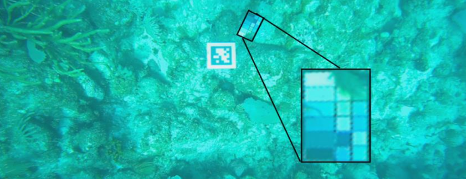
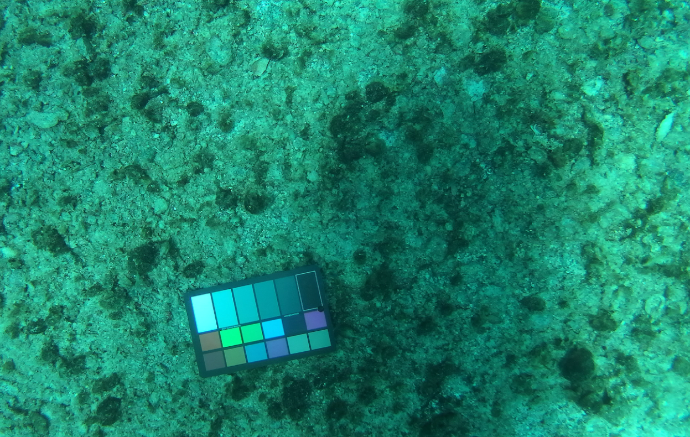
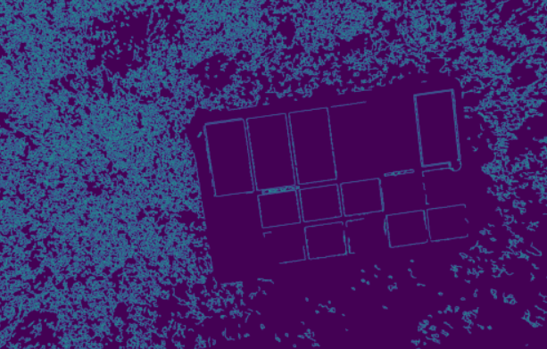
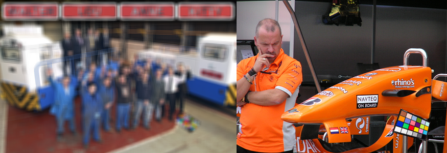
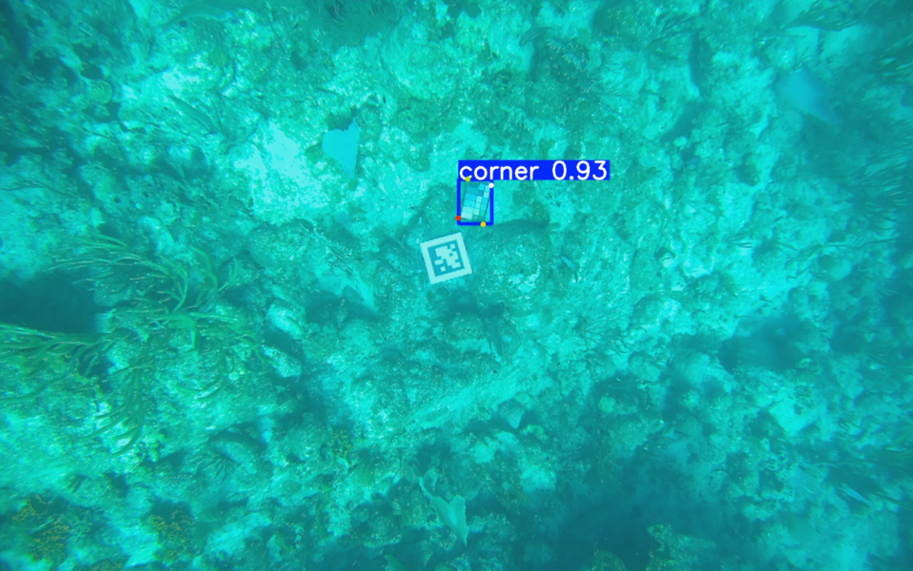
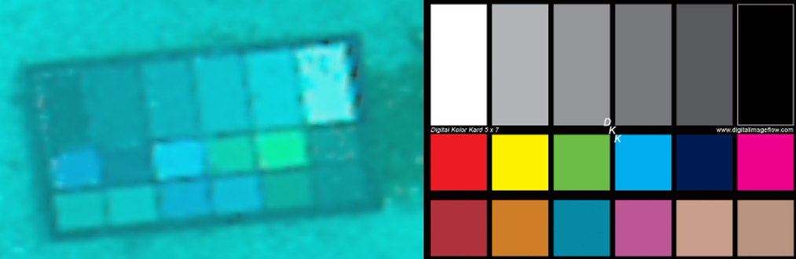
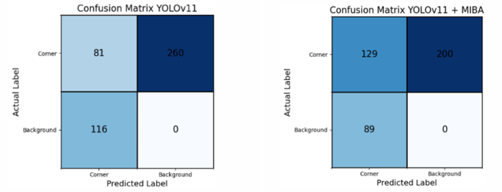
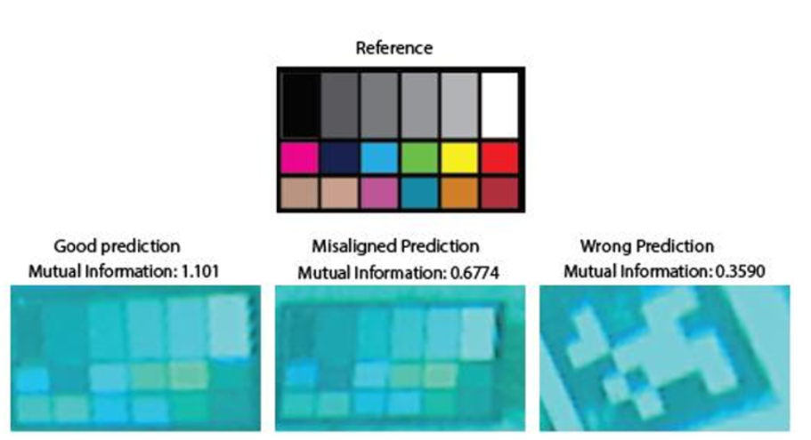

Computer vision · WHOI WARPLAB
Color Card Detection
I did this as part of my internship at the WARPLAB at WHOI.
The Underwater Card Detection Problem

Color cards are used for calibrating colors on cameras. However, they can also be used to measure the attenuation of light, as some wavelengths are absorbed by the water molecules in the water. Color cards were left on the ocean floor, which the underwater robot would use to calculate light attenuation so it could correct it and enhance images so algorithms such as object detection and reconstruction could work more reliably. However, before correcting the image, we would need to be able to extract color data from the color card, and I worked on this.
Underwater Image

I tried various techniques, such as using traditional CV edge detectors like Canny edge detection, fitting lines to the detected edges, and using existing color card detectors. However, I soon found that Canny edge detection did not work well when the color card was far away, and it missed some of the boxes. Additionally, current color card detectors were designed for detecting color cards when the card was close to the camera and when there was no underwater light attenuation. Obstructions on one corner of the color card also caused methods like homography and feature detection to fail.
Canny Edge Detection Results — A lot of noise, unconnected lines

After all this failed, I decided to try learning methods, so I labeled 200 images and tried using YOLO for keypoint detection. While it did predict the corners of the color card, when I ran it on another dataset, I realized it did not generalize well. To combat this, I tried training YOLO on synthetic data first, which was generated in Isaac Sim. Color cards were placed on top of images from a Flickr dataset, and the camera picked a random position. Annotations were generated automatically to locate the corners. Images were also blurred so YOLO would learn to recognize blurry underwater color cards, and transformed so YOLO would be able to recognize tilted cards.
Synthetic Data

Results — 98% of cards detected, corners a few pixels off

Training YOLO on this data led to an improvement, and it generalized much better to both underwater datasets. However, I realized the points were still a few pixels off, and we could not reliably get the colors from the color card.
Card Comparison and Registration with Mutual Information

To improve this, I used mutual information to align the points by maximizing the mutual information between the underwater color card and its reference. While this did cause an improvement, it was slow and still had some false positives. However, the mutual information layer created a way to distinguish color cards from AprilTags, which YOLO classified as the same object. It also caused a 60% increase in the number of perfect corner detections.

MI can distinguish good predictions from bad ones

In the future, I do want to revisit this project and try to find a faster way to do the image registration. These results were presented at the WHOI Summer Student Poster Session.
This experience taught me that problems that can be solved with simple Canny edge detection on the surface are a lot more complicated underwater. It also taught me that both humans and learned models can make assumptions when solving problems on the surface, and these assumptions may not hold underwater or in other environments where we do not have as much data to experiment with.